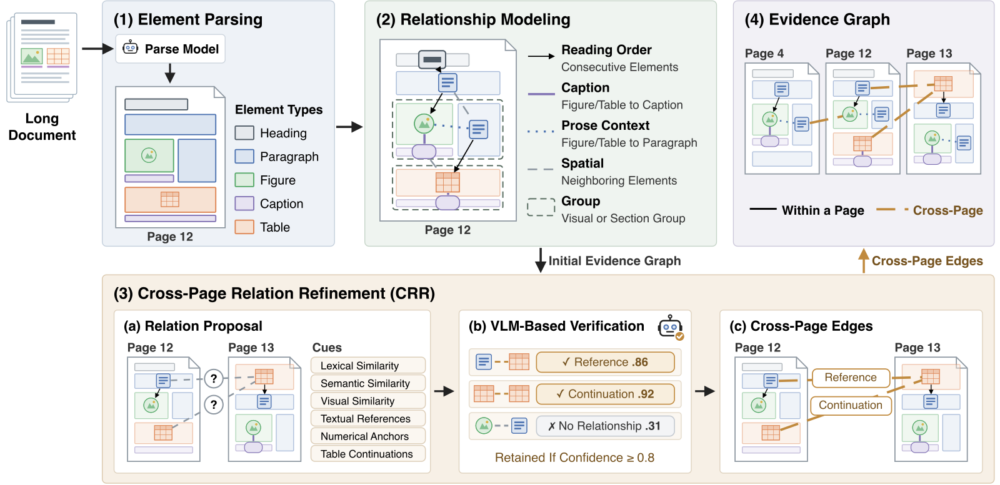
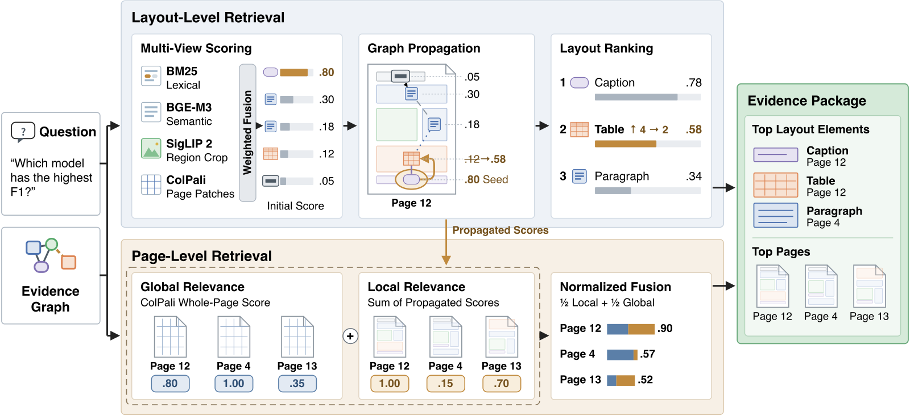
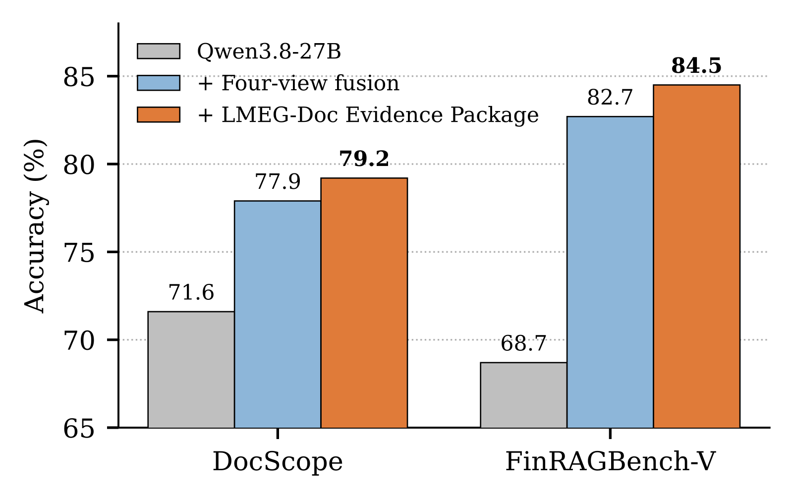
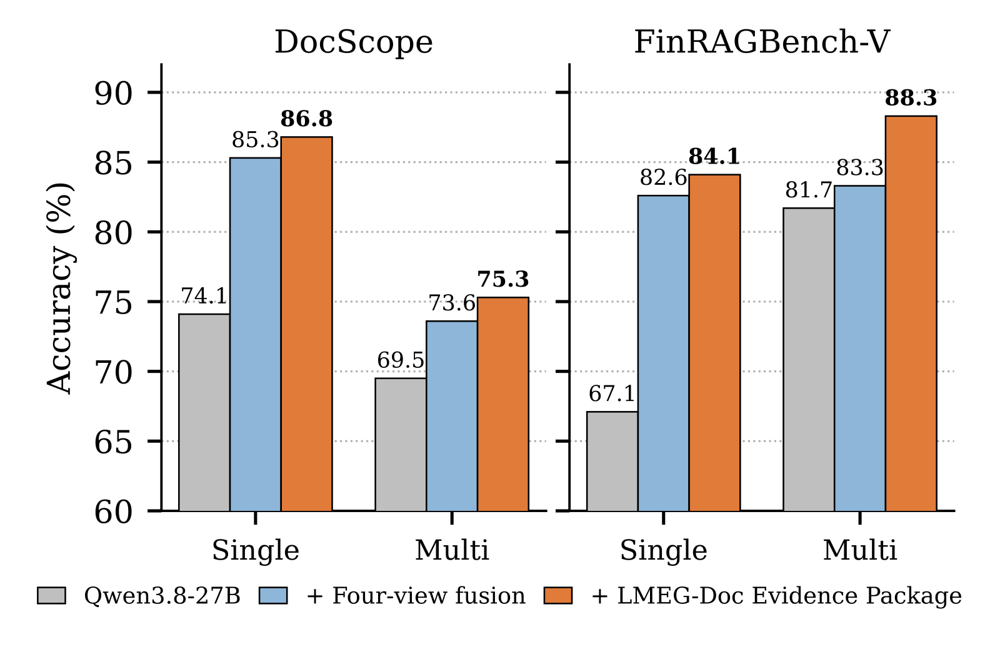
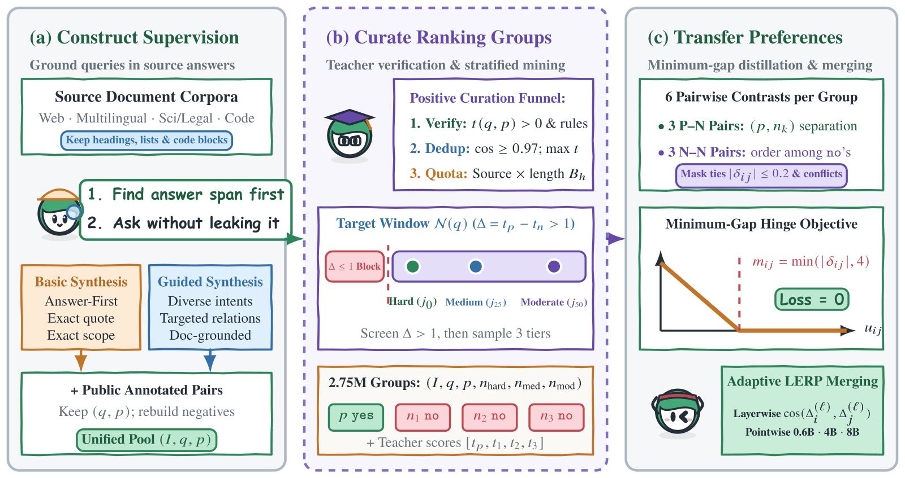
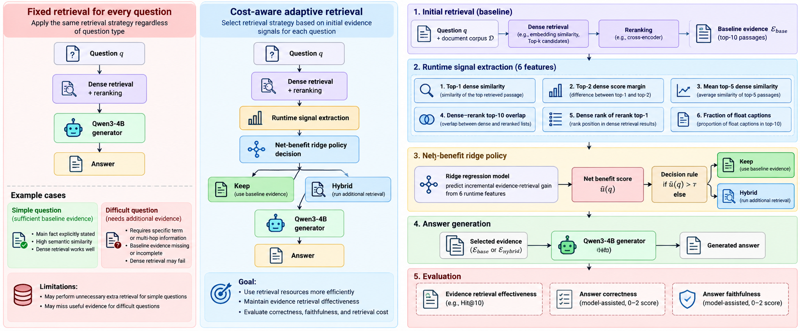
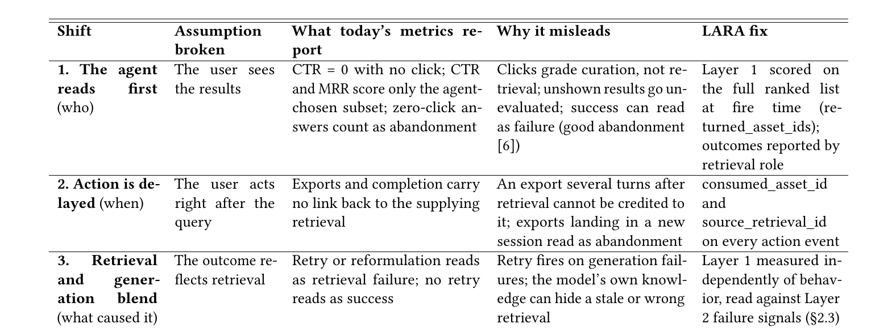
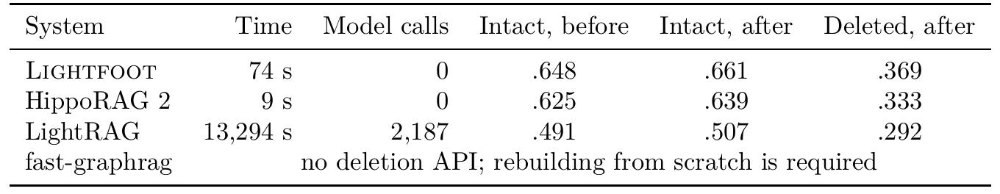

问「哪个模型 F1 最高」，图注排第一，装数字的表却排第四：LMEG-Doc 怎样把证据连起来
你在一份很长的技术报告里问：「哪个模型的 F1 最高？」检索很快把一段图注排到第一，因为图注里写着 F1 对比。真正列出各模型分数的那张表，格子里多是数字，跟问题的字面重合很少，只排在第四。
答案在表里，检索看见的却是图注。换一个问题更麻烦：正文提到「见后面的表」，表却在好几页之后。只按「这一段、这一页跟问题有多像」来排序，相关的图和表就会掉下去。
这篇论文来自 Capital One 和 University of Southern California，做的是长文档多模态检索：有用证据散落在不同页、不同模态时，怎样把它们一起找回来。现有的文本检索器，如 BM25 和 BGE-M3，本来在文本上做词面或语义匹配，用到文档上时通常先把页面上的字认出来或解析成段落，再按单个片段打分。视觉检索器如 ColPali，本来是把整页当成图像，用页面小块跟问题做交互打分，用来保住版式和图表，但仍然按单个页面或区域的相似度排序。LMEG-Doc 先按版式和上下文把文档元素连成证据图，再用视觉语言模型补上跨页关系，然后把多路检索分数沿图传播。不必针对基准做训练，它在多模态文档检索基准 MMDocIR 上，前 10 个版式元素盖住标注区域的比例（L@10）从已发表最强基线的 62.0% 提到 70.7%。把找回的证据交给开放权重模型 Qwen3.8-27B，相对不加这些证据、只用同一模型答题，DocScope 的答题准确率提高 7.6%，面向财务报告的 FinRAGBench-V 提高 15.8%。
这些提升出现在要找回多块证据的时候；只取最相似的那一页，它并不压过已经在 MMDocIR 上微调过的检索器。
图注对上了，表格为什么还排在后面
表就在图注旁边，为什么还会掉到第四？因为现有方法给每个页面或每个版式元素单独打一个跟问题的相似分，再按这个分排序。图注里有「F1」这类词，分会很高。表格里是各模型的分数，本身不一定重复问题里的词，分就会很低。相连的证据被拆开，答题时拿到图注、拿不到表。
LMEG-Doc 先把文档切成带位置的元素，再把这些元素连成一张与问题无关、可以反复使用的证据图。解析用的是 Nemotron-Parse v1.2，它会把每一页拆成标题、段落、图注、图和表，并记下页码、位置框、类型和文字。页内先连上四种边：按阅读顺序把前后元素串起来，用图注边把图或表跟对应说明连上，用上下文边把视觉元素跟周围段落连上，再用空间边把位置靠近的元素连上。
比成对的边再多一步，是组。一个视觉组里放一张图或一张表，加上它的图注和说明；一个章节组里放标题和这一节里的元素。组本身也是一个节点，用隶属边连到组员。这样，只要组里有一个成员直接对上问题，检索就有机会把其余成员一起带回来。
那跨了好几页的表，光靠页内的边够不够？不够。论文加了跨页关系补全（CRR）。它先用词面和语义相似、视觉相似、正文里的引用、共享的数字，以及表格是否像在续页，提出跨页候选，而且候选里至少要有一个图或表。然后由视觉语言模型查看对应的图像区域、文字、页码和类型，判断有没有关系，并给出类型和置信度。图 1 里写明：置信度至少 0.8 才把这条跨页边加进图。示例里，引用边 0.86、续页边 0.92 被留下，0.31 的「无关系」被丢掉。建图在提问之前完成，检索时不再调用大模型。 Hoot 说
正文已经用第 12 页的图注和表格，走过四路打分和图传播怎样把同一页里的表捞回来。这里只追一个还没拆开的点：跨页候选为什么不能直接连成边。下面沿用正文示例里的三条分数：引用边 0.86、续页边 0.92，以及 0.31 的「无关系」。
跨页线索提出候选 → 视觉语言模型给出类型和置信度 → 置信度至少 0.8 才连边 → 0.31 的无关系候选被切断，后来的传播走不了这条路
- 跨页线索 → 候选，还不是边跨页关系补全先用词面和语义相似、视觉相似、正文里的引用、共享的数字，以及表格是否像在续页，提出跨页候选；候选里至少要有一个图或表。这些还只是提名，没有进证据图。
- 视觉语言模型 → 类型和置信度视觉语言模型查看对应的图像区域、文字、页码和类型，判断有没有关系，并给出类型和置信度。示例里得到三条：引用边 0.86、续页边 0.92，以及 0.31 的「无关系」。
- 置信度至少 0.8 → 留下 0.86 和 0.92图 1 写明：置信度至少 0.8 才把这条跨页边加进图。引用边比门槛高 0.06，续页边高 0.12，两条都留下。0.86 − 0.8 = 0.06；0.92 − 0.8 = 0.12
- 0.31 低于门槛 → 无关系通路被切断0.31 比 0.8 低 0.49，这条「无关系」候选被丢掉，不能成为边。如果跳过验证把它连上，后来的传播就可能顺着走；验证之后这条路被切断，但算不出会传过去多少分，也不把它写成召回收益。0.8 − 0.31 = 0.49
建图在提问之前完成，检索时不再调用大模型。所以提问之后沿图传播时，能走的跨页边已经是通过 0.8 门槛的那些。图 1 画的是先提名、再验证、最后只留下高置信度跨页边，上面只把这三条分数跟门槛比了一遍，不再走第 12 页那张表的传播。

出处
正文与论文 Figure 1：跨页关系补全先提出候选，再由视觉语言模型给出类型和置信度；置信度至少 0.8 才把跨页边加进图。示例里，引用边 0.86、续页边 0.92 被留下，0.31 的「无关系」被丢掉。建图在提问之前完成，检索时不再调用大模型。
走一遍：这张表怎样从第 4 升到第 2
下面按论文图 2 把这条检索算一下。问题是：「Which model has the highest F1?」文档里，第 12 页的图注和表格已经被图注边连在同一个视觉组里。
第一步，四路打分。BM25 看词面是否对上，BGE-M3 看文本语义是否接近，SigLIP 2 比较问题和裁下来的区域有多像，ColPali 则在原页的图像小块上跟问题做交互：先用元素的位置框圈出落在这个区域里的小块，每个问题词取这些小块里的最大点积，再把各词的分数加起来，得到这个元素的 ColPali 分。四路分数先各自标准化，再加权加总，得到每个元素的初始分。图注跟问题对得上，初始分是 0.80；表格里多是数字，初始分只有 0.12，排在第 4。
第二步，沿图传播。如果只按初始分排序，这张表就会留在后面。系统把高分元素当作种子，用个性化 PageRank 把分数顺着边传出去：比如 HippoRAG 就用它在知识图谱上，从已知相关的点把相关性传给邻居，这里用在证据图上。图注是种子，分是 0.80；表格接到这分，从 0.12 升到 0.58。
第三步，先用 RRF 把初始排序和传播排序合在一起，再做组内对齐。RRF 按两个名单里的名次加倒数权重：名次越靠前，加进去的分越高，这样原来就对上的元素仍保留在融合排序里。图上标出的融合分数是：图注 0.78，表格 0.58，一段正文 0.34。随后，同一视觉组里的成员会被抬到组内最高分，图、表和图注就会一起往前排。表格的名次从第 4 升到第 2。
第四步，再给整页打分，按图上的数字算一下。一页的全局分来自 ColPali 的整页相似度，局部分把这一页里各元素传播后的分数加起来，两路先归一化，再各取一半相加。图 2 里，第 12 页局部分 1.00、整页分 0.80，各一半相加是 0.5×1.00+0.5×0.80=0.90，排在最前。第 4 页整页分最高，是 1.00，但页内传播分只有 0.15，合成 0.5×0.15+0.5×1.00=0.575，图上记为 0.57，排在后面。第 13 页是 0.5×0.70+0.5×0.35=0.525，图上记为 0.52。
第五步，打包证据。最后留下的版式证据是第 12 页的图注和表格，外加第 4 页的一段正文；页面则是第 12、第 4、第 13 页。答题模型同时拿到图注和装数字的表，不必改自己的推理方式。

这个例子能说明的是：同一页里，图注对上了、表格分很低时，图上的边可以把分数传过去，把表捞回来。它说明不了跨页边有多大用，因为这张表的提升发生在第 12 页内部。跨页补全要看后面的多页结果。
去掉图传播，召回会掉多少
如果只去掉图传播，MMDocIR 上全部问题的 L@10 会从 70.7% 降到 68.5%，因此掉了 2.2 个百分点。去掉组内对齐，会降到 69.6%，掉 1.1 个百分点。
去掉跨页补全，全部问题只从 70.7% 降到 70.5%；但只看证据跨多页的问题，L@10 会从 54.8% 降到 52.9%。这说明页内关系贡献了大部分总体收益，跨页边在证据分散到多页时更有用。
LMEG-Doc 没有在 MMDocIR 上做任务训练。页面召回只看第一页时，它是 56.7%，对照是在该基准上训练过的 Col-Phi3 的 57.0%。
把前五页算进来，它是 85.7%，比 Col-Phi3 的 82.2% 高 3.5 个百分点；L@10 则从已发表最强基线 ColPali 的 62.0% 提到 70.7%。因此前五页和前十个版式元素上的召回更高。
| 方法 | P@1 | P@5 | L@10 |
|---|---|---|---|
| ColPali | 53.0 | 80.8 | 62.0 |
| Col-Phi3（在 MMDocIR 上训练） | 57.0 | 82.2 | 61.1 |
| LMEG-Doc（未做任务训练） | 56.7 | 85.7 | 70.7 |
（数字来自论文表 2）
在 DocScope 和 FinRAGBench-V 上，对照是文本检索的 BM25、BGE-M3，以及只给整页排序的 ColPali。LMEG-Doc 在前 3 页、前 5 页和版式 L@5、L@10 上都最高。财务报告这套基准上，前 5 页召回比 ColPali 高 3.5 个百分点，L@10 为 52.0%。只看第一页时，它仍低于 ColPali：DocScope 上是 40.2% 对 43.4%，FinRAGBench-V 上是 57.9% 对 61.8%。ColPali 在这两套基准上没有版式指标，因为它只排整页。
按证据类型拆开看，相对四路融合，完整方法把图类问题的 L@10 提高 7.4 个百分点，从 70.2% 到 77.6%。这说明把版式关系建进检索流程，有助于把图类证据捞回来。
需要同时用到不同模态证据的问题，页面 P@10 提高 6.3%，L@10 提高 3.0%。单页和多页问题上，L@10 分别提高 3.2% 和 3.3%。
检索变好之后，问答准了多少
检索到的页面和版式元素会打成一个证据包，直接接到现有问答流程里，不改答题模型。表 4 里，不加 LMEG-Doc 证据包、只用 Qwen3.8-27B 答题时，DocScope 准确率是 71.6%；FinRAGBench-V 上对应数字是 68.7%。加上 LMEG-Doc 的证据包后，分别升到 79.2% 和 84.5%，因此提高了 7.6 个百分点和 15.8 个百分点。
同一套答题模型，如果只加四路融合找回的证据，DocScope 是 77.9%，FinRAGBench-V 是 82.7%。完整 LMEG-Doc 比四路融合又分别高 1.3 和 1.8 个百分点，说明把关系建模进检索，对答题还有额外用处。

79.2% 也超过了同表里的专有模型：Gemini 3.1 Pro 是 78.9%，GPT-6.1 Sol 是 78.4%。这里的答题模型是开放权重的 Qwen3.8-27B，没有为这个任务再微调。
按证据是否跨页再拆一次。相对四路融合，多页问题上的答题准确率在 DocScope 上从 73.6% 升到 75.3%，提高 1.7%；在 FinRAGBench-V 上从 83.3% 升到 88.3%，提高 5.0%。这说明完整的关系感知检索在多页问答上有效。单页问题也有提高，但幅度更小。前面那个 F1 表格的例子发生在同一页内；跨页边的独立贡献，只能看前面多页召回上的 CRR 消融，不能从这组问答对照里单独拆出来。

这对做长文档问答的人意味着什么
不必改答题模型，也不必先在版式标注上微调检索器，可以把证据包接到现有问答流程里；检索预算不要只留第一页。
如果你在做论文、技术报告或财务披露的问答，可以先抽一批「图注对上了、答案在图或表里」的问题，看这些图和表现在排在第几。若图和表经常排在后面，只靠单段相似度排序，可能会漏掉这些互补证据；证据图提供了另一条找回路径。证据图可以在提问之前建好、跨问题复用，检索时按图传播分数。
局限
FinRAGBench-V 的问答数字来自英文子集的 539 道题，对象是做成页面图像的财务报告，对错由模型 Qwen3.6-35B-A3B 当评判。跨页补全对全部问题的增益很小，它的用处要放到证据跨多页的子集里看，具体降幅写在前面的消融里。
读完这篇，你觉得
夜读鸮记下了，谢谢你的反馈。
点一下即可，无需登录；再点一次撤回。只统计匿名次数，不记录你是谁。
相关论文RELATED

Retrieval · 2026-11-11Yuanbao-Reranker: Document-Grounded Synthesis and Preference Distillation for Text Reranking用相关和不相关两个标签做 pointwise 微调的 reranker 有个缺口：同一个 query 的负例全都标成不相关，模型学不出哪个负例更接近正例。腾讯元宝搜索给每个正例配三个难度不同的负例，再加一项蒸馏损失：老师模型给出的两篇文档分差被当作下限，学生拉开到这个距离就不再受罚。在没参与训练的分组上，三档负例完全排对的比例从 36.4% 涨到 69.7%，而正负例的区分本来就接近满分。把下限换成平方误差去贴分差，平均分比不加这一项还低，因为已经拉开的分差会被往回压。负例内部的先后才是二分类标签漏掉的信息，最终 4B 学生的五项平均分超过了当老师的 8B 模型，训练 reranker 时值得先看负例的分数是不是都挤在一起。 Retrieval · 2026-11-19MIPR: A Benchmark for Reasoning-Intensive Multimodal Intent-to-Product Retrieval with Multi-Category Solutions真实电商查询常常只说出购买或使用意图、并不点名具体商品，而且同一意图可能由多个类目的商品来满足，现有多模态检索基准却多半假定目标已经比较明确。一份面向意图到商品检索的基准给出 3,522 条多模态查询和共享的 30,731 件商品语料，强调需要推理的检索、多类目解决方案，以及细粒度相关标注。最强的基于向量的检索器在全部查询上的十分位排序质量为 49.23%，经过重排后升到 60.11%，但离候选池上界仍有明显差距。这说明，意图清楚却不指向单一类目时，检索系统还远谈不上已经解决，基准本身更适合用来诊断，而不是只报一个总分。
Retrieval · 2026-11-19MIPR: A Benchmark for Reasoning-Intensive Multimodal Intent-to-Product Retrieval with Multi-Category Solutions真实电商查询常常只说出购买或使用意图、并不点名具体商品，而且同一意图可能由多个类目的商品来满足，现有多模态检索基准却多半假定目标已经比较明确。一份面向意图到商品检索的基准给出 3,522 条多模态查询和共享的 30,731 件商品语料，强调需要推理的检索、多类目解决方案，以及细粒度相关标注。最强的基于向量的检索器在全部查询上的十分位排序质量为 49.23%，经过重排后升到 60.11%，但离候选池上界仍有明显差距。这说明，意图清楚却不指向单一类目时，检索系统还远谈不上已经解决，基准本身更适合用来诊断，而不是只报一个总分。 Retrieval · 2026-11-12DocFS: File Systems as Agentic Reasoning Environments for Complex Multimodal Document Question Answering让 VLM agent 回答很长的图文混排文档，难点常常不在模型，而在文档怎么摆给它。DocFS 的做法很朴素：把文档改造成一个文件系统，章节变成嵌套目录，正文、图、表、公式各存成文件，再加上索引文件和记录图文对应关系的关联文件。agent 只用列目录、关键词搜索、读文件这几个现成操作，先定位候选证据，再顺着关联文件补全，最后回原始页面核对。在 MMLongBench-Doc 上，它的准确率比最强基线 DocLens 高 2.9 个点，推理阶段平均耗时从 359.9 秒降到 43.9 秒。文件系统本身就把结构和配套工具配好了对，不用再为每种文档结构单独设计接口。
Retrieval · 2026-11-12DocFS: File Systems as Agentic Reasoning Environments for Complex Multimodal Document Question Answering让 VLM agent 回答很长的图文混排文档，难点常常不在模型，而在文档怎么摆给它。DocFS 的做法很朴素：把文档改造成一个文件系统，章节变成嵌套目录，正文、图、表、公式各存成文件，再加上索引文件和记录图文对应关系的关联文件。agent 只用列目录、关键词搜索、读文件这几个现成操作，先定位候选证据，再顺着关联文件补全，最后回原始页面核对。在 MMLongBench-Doc 上，它的准确率比最强基线 DocLens 高 2.9 个点，推理阶段平均耗时从 359.9 秒降到 43.9 秒。文件系统本身就把结构和配套工具配好了对，不用再为每种文档结构单独设计接口。 Retrieval · 2026-11-16CURATOR: Scalable Fine-grained Evidence Selection for Retrieval-Augmented Generation using Decision ModelsRAG 通常把检索到的整段文字都塞给大模型，可真正能回答问题的往往只有其中几句。挑出这几句并不容易：一句话单看像是无关，要结合其他检索内容才知道该不该留。逐句带着全部上下文判断又太贵。决策模型能在一次推理里同时给很多候选句打分，每个判断都看得到周围的句子，但作者发现，同时要做的判断越多，它分辨有用证据的能力越差，而一次检索常常就带来几百个候选句。CURATOR 专门训练决策模型从大候选池里挑出数量不定的支撑句，保住一次打分的效率。在 128 个 token 的上下文预算下，它在没见过的数据集和领域上平均把证据召回提高 17.0%，下游回答质量提高 17.4%。上下文越紧，挑对证据比塞进更多段落更要紧。
Retrieval · 2026-11-16CURATOR: Scalable Fine-grained Evidence Selection for Retrieval-Augmented Generation using Decision ModelsRAG 通常把检索到的整段文字都塞给大模型，可真正能回答问题的往往只有其中几句。挑出这几句并不容易：一句话单看像是无关，要结合其他检索内容才知道该不该留。逐句带着全部上下文判断又太贵。决策模型能在一次推理里同时给很多候选句打分，每个判断都看得到周围的句子，但作者发现，同时要做的判断越多，它分辨有用证据的能力越差，而一次检索常常就带来几百个候选句。CURATOR 专门训练决策模型从大候选池里挑出数量不定的支撑句，保住一次打分的效率。在 128 个 token 的上下文预算下，它在没见过的数据集和领域上平均把证据召回提高 17.0%，下游回答质量提高 17.4%。上下文越紧，挑对证据比塞进更多段落更要紧。
Retrieval · 2026-10-30When Is Additional Retrieval Worthwhile? A Cost-Aware Study of Evidence Gain and Answer Reliability in RAGRAG 里多加一路检索，到底值不值？这篇论文先用向量检索加重排拿到一批证据，再用一个小线性模型读这一轮检索留下的分数，比如第一名的相似度多高、和第二名差多少，预测换成 BM25 加向量的混合检索能不能多找回证据，只有预测收益够大时才切换。在科研论文问答数据集 QASPER 里没参与训练的论文上，它只给 24.5% 的问题换了混合检索，证据命中率就和每题都用混合检索一样，都是 78.70%。可是让一个小模型据此生成答案后，答对率和忠实度都没有变好。证据找得更省，不等于答案更可靠，检索指标的提升不能直接当成问答质量的提升。 Retrieval · 2026-10-29Tessera: Structure-Completed Evidence Units for Web Retrieval-Augmented Generation问维基百科《欢乐糖果屋》的制片人是谁，答案就在页面信息框的制片一行，可文本抽取把这一格里的两个名字弄丢了，读者模型只看到导演，于是答错。这篇论文在整个英文维基百科上把答案证据从网页源码一路追到读者输入，发现这种丢失很普遍：7.6% 的问题证据根本没完整进索引，其中 81% 是表格单元格、表头或图注。Tessera 检索照旧，只在读之前把排名靠前的网页重新拆成一行表格、一个列表项这样的小单元，补上标题、章节和表头，再挑相关的装进同样的 token 预算。文本和截图两类流水线的答对率都提高 5 到 6 个点。
Retrieval · 2026-10-29Tessera: Structure-Completed Evidence Units for Web Retrieval-Augmented Generation问维基百科《欢乐糖果屋》的制片人是谁，答案就在页面信息框的制片一行，可文本抽取把这一格里的两个名字弄丢了，读者模型只看到导演，于是答错。这篇论文在整个英文维基百科上把答案证据从网页源码一路追到读者输入，发现这种丢失很普遍：7.6% 的问题证据根本没完整进索引，其中 81% 是表格单元格、表头或图注。Tessera 检索照旧，只在读之前把排名靠前的网页重新拆成一行表格、一个列表项这样的小单元，补上标题、章节和表头，再挑相关的装进同样的 token 预算。文本和截图两类流水线的答对率都提高 5 到 6 个点。
Retrieval · 2026-10-25When Agentic Retrieval Fails Silently: Framework and Production Evidence from a Creative AI Assistant在 Adobe Express 的智能助手里，按用户看到排序结果并据此行动来算的检索指标不再成立：聊天入口的改写率是 44.4%，比同一套检索系统支撑的模板库搜索还高，后者只有 33.1%。原因是两边的改写不是一回事。模板库里改写，是结果不相关、换个词再搜；聊天里改写，多数是看到生成结果后想改一改。更意外的是，助手只在 0.31% 的提示上真正调用了检索。论文提出的评估框架分三层测，检索触发时用相关性标注直接给返回结果打分，再看返回的素材有没有被用上，最后看用户是否导出；四个日志字段分别记下检索编号、返回的完整列表、每次行动用了哪个素材、这个素材出自哪次检索，把使用和导出连回那次检索。
Retrieval · 2026-11-11Lightfoot: Graph Retrieval-Augmented Generation with Exact, Model-Free Document DeletionGraphRAG 上线后有两笔账论文很少算：建图花多少钱，删文档有多麻烦。合同到期或用户要求删除时，要把一篇文档和由它派生的内容都清掉，可混了多篇文档内容的实体摘要很难拆干净。Lightfoot 规定图里每条记录都只由单段的抽取结果算出来，每段只调一次模型，检索不调模型，删文档就是数据库操作，建图成本在三个数据集上也都最低。在 MuSiQue 全量语料上删掉 10% 的文档后，图和只用剩余文档重建的结果完全相同，LightRAG 删同样的文档要调 2187 次模型、跑 3.7 小时。代价是准确率和 HippoRAG 2 互有胜负，在 2WikiMultiHopQA 上明显落后。能精确删除，靠的是没有任何记录来自读过多段内容的模型调用，有合规删除需求的团队可以照这条约束设计索引。
讨论
欢迎补充实验细节、复现经验或不同看法。需 GitHub 登录。
正在加载讨论…